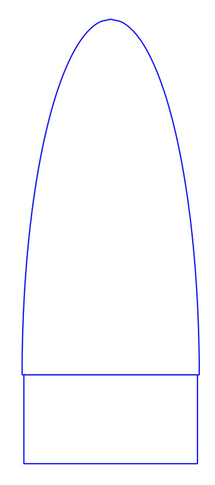
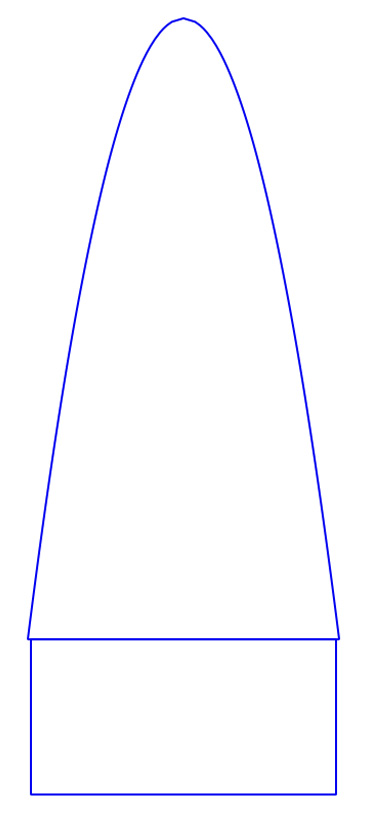
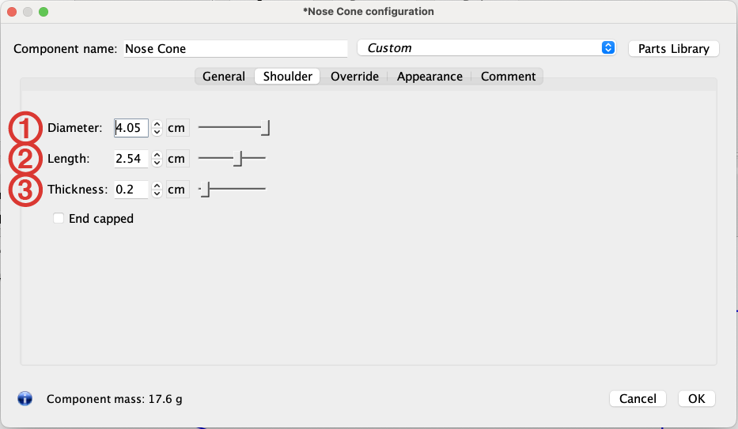

<div id="content-source">
  <div id="openrocket-nose">
    <h1 style="color: var(--content-text);">Nose Cones</h1>
    <p>
    The nose is the front end of the model rocket (astounding, I know). It
    is made of two parts:
    </p>
    <ul>
      <li>Nose</li>
      <li>Shoulder</li>
    </ul>
    <p>
      The shape of the nose can vary widely, leading to different aerodynamic
      profiles. Some common nose shapes are in the table below. Click on them
      to learn more about each nose type.
    </p>
    <div style="display: flex; justify-content: center;"> 
      <table style="margin: 10px; width: 425px;" id="nose-table">
        <tr>
          <td>
            <a href="#conical"></a>
          </td>
          <td>
            <a href="#ogive"></a>
          </td>
          <td>
            <a href="#ellipsoid"></a>
          </td>
        </tr>
        <tr>
          <td>
            <a href="#conical"><h4>Conical</h4></a>
          </td>
          <td>
            <a href="#ogive"><h4>Ogive</h4></a>
          </td>
          <td>
            <a href="#ellipsoid"><h4>Ellipsoid</h4></a>
          </td>
        </tr>
        <tr>
          <td>
            <a href="#power"></a>
          </td>
          <td>
            <a href="#parabolic"></a>
          </td>
          <td>
            <a href="#haack"></a>
          </td>
        </tr>
        <tr>
          <td>
            <a href="#power"><h4>Power Series</h4></a>
          </td>
          <td>
            <a href="#parabolic"><h4>Parabolic</h4></a>
          </td>
          <td>
            <a href="#haack"><h4>Haack Series</h4></a>
          </td>
        </tr>
      </table>
    </div>
    <p>
      The nose must always be free to slide forward and come off. Therefore,
      the back end of the nose is cut down to form an internal shoulder which
      will slide inside the body tube and hold the nose in place. The base
      diameter of the nose should match the <em>outside</em> diameter of the
      body tube, while the diameter of the shoulder should match the
      <em>inner</em> diameter of the body tube so that it will slip-fit inside
      the tube. It's better to have the shoulder a little loose because you
      can always build it up by wrapping tape around the shoulder. If it's too
      large, then you'll need to sand the shoulder down. A rule of thumb for
      testing the looseness of the shoulder is that it should pull easily from
      the body tube but shouldn't rattle if you shake the body tube.<br /><br />
      The nose must be made of plastic or balsa wood, but never metal. Nor
      should a metal pin or nail be attached to the tip as it could turn a
      malfunctioning rocket into a missile or lawn dart. Besides, rounded nose
      tips perform better than pointed ones.<br /><br />
      Several commercial noses are available, and it can be very simple to
      select a predesigned nose and move on.<br><br>Designing one's own nose cone is a lot of fun and one of the
      key ways to customize a rocket. It is also one of the key components of
      a rocket's stability and aerodynamics. It is therefore
      <strong><em>very</em></strong> important that fabricated model matches
      the computer design.
    </p>
    <h2 style="color: var(--content-text)">Designing a Nose in Open Rocket</h2>
    <p>Design your nose in OpenRocket by selecting the Sustainer from the Design Tree and choosing "Nose Cone" from the Add New Component Section. Then either select from a list of pre-designed noses or close it and make your own. The things you <strong>must</strong> modify/confirm are:</p>
    <div class="content-container">
      <div class="content-left">
        <ol><h4>General Tab</h4>
          <li>Nose cone shape: choose from the six shapes above.</li>
          <li>Nose cone shape: modify the chosen shape</li>
          <li>Length: Adjust to modify your stability or make it match the nose you are planning to use</li>
          <li>Base diameter: should match body tube's <strong>outer diameter</strong>.</li>
          <li>Wall thickness: typically 1.5mm to 2 mm.</li>
          <li>Component Material: PLA or Resin</li>
        </ol>
        <ol><h4>Shoulder Tab</h4>
          <li>Diameter: match the <strong>inner diameter</strong> of tube minus 0.4 mm</li>
          <li>Length: 50% to 100% of the body tube is appropriate.</li>
          <li>Thickness: match the thickness of the nose</li>
        </ol>
      </div>
      <div class="content-right">
        
        
        
      </div>
    </div>
    &nbsp;
    <h3 style="color: var(--table-text)">Video Example</h3>
    <div>
      <iframe
        width= "100%"
        height = 600px
        src="https://www.youtube.com/embed/XiMwgFn-G7s"
        title="AHS Rocketry Nose Cone Design"
        frameborder="0"
        allow="accelerometer; clipboard-write; gyroscope; picture-in-picture"
        allowfullscreen>
      </iframe>
    </div>

  </div>
</div>
